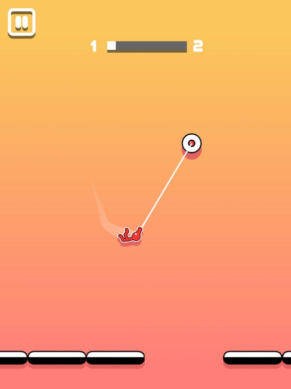
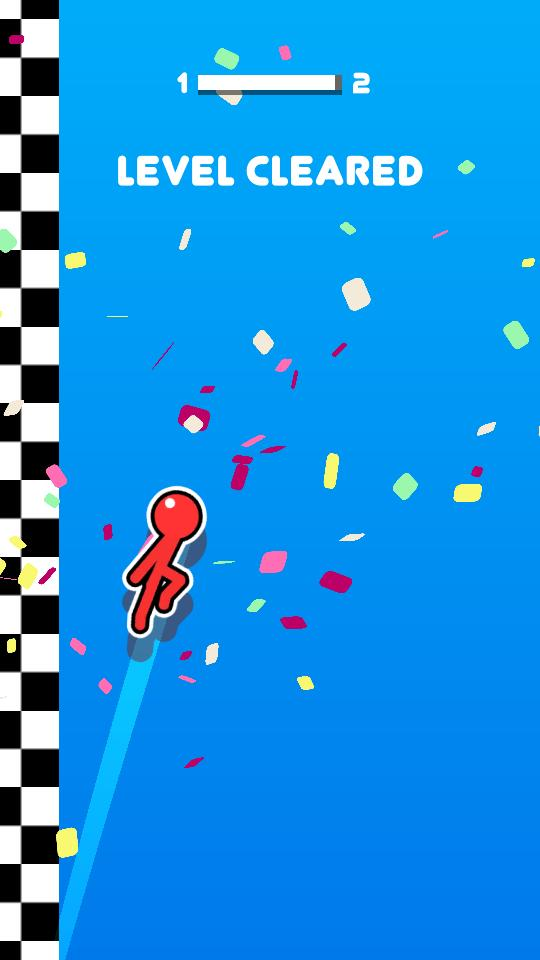

Stickman Hook is a physics-based swinging game that's deceptively simple. You click to attach your grappling hook, swing, release, and try not to faceplant into obstacles. The core loop is addictive: hook → swing → release → repeat. With over 15 million players worldwide, this game has hooked people (pun intended) with its perfect blend of accessibility and challenge.
Here's the thing: the controls are one-tap, but mastering momentum management takes real skill. You're navigating through 320 levels across 8 worlds, each introducing new mechanics like moving platforms, anti-gravity zones, and timed anchors. Trust me, by World 5 you'll be questioning every life choice that led you to this moment.
What makes it great is the physics feel. Every swing has weight, every release matters. This isn't just another casual game — it's a precision timing challenge disguised as a stickman doodle. Whether you're chasing leaderboard times or just trying to beat Level 47 for the 50th time, Stickman Hook delivers.
🎯 Game Basics
Stickman Hook throws you into a world of anchor points and obstacles. Your stickman starts at the beginning of each level, and your goal is simple: reach the finish line as fast as possible. The catch? You can only move by swinging from anchor points using your grappling hook.
The game is built on pendulum physics. When you hook an anchor, your stickman swings in an arc. The longer you hold, the more momentum you build. Release at the right moment, and you fly forward. Release too early, you stall. Release too late, you swing backward. It's a timing game at its core.
Each level is a self-contained puzzle. Some have straight-shot anchor chains, others require creative zigzag routes. You'll die a lot — but each death teaches you something about timing, angles, or momentum. The game has a "just one more try" quality that keeps you grinding through levels.

🎮 Controls
| Action | Key / Input |
|---|---|
| Hook / Swing | Left Mouse Click / Tap |
| Release Hook | Release Click / Tap |
| Hook (Keyboard) | Spacebar |
| Restart Level | R Key / Retry Button |
| Pause | Esc / Pause Button |
The game works with both mouse and keyboard. Mouse gives you more precision for targeting specific anchors, but Spacebar is faster for rapid-fire hooks in tight sections. Find what works for your playstyle.
⚡ Core Mechanics
Swinging & Momentum
Your stickman behaves like a pendulum when hooked. The longer your rope, the slower but wider your swing. Short ropes give fast, tight arcs. The key to speed is chaining swings smoothly — each release should set up your next hook naturally.
Release Timing
This is everything. Release at the bottom of your swing arc (the "sweet spot") for maximum forward velocity. The window is about 150 milliseconds — small, but learnable. Release too high, you go upward. Release too low, you crash. Master this and you'll cut your clear times in half.
Surface Types
Not all anchors behave the same:
- Standard Anchors: Normal swing physics
- Sticky Surfaces: Hook holds longer, good for extended swings
- Slippery Surfaces: Hook slides, less control but enables unique moves
- Breakable Blocks: Hook destroys them, opening new paths

🌍 Worlds & Levels
Stickman Hook features 320 levels divided into 8 themed worlds. Each world introduces new mechanics and ramps up the difficulty. Here's what to expect:
| World | Theme | Levels | New Mechanic |
|---|---|---|---|
| 1 | Green Meadows | 1-40 | Basic grapple & swing |
| 2 | Frost Peaks | 41-80 | Slippery anchors |
| 3 | Magma Caverns | 81-120 | Moving platforms |
| 4 | Sky Gardens | 121-160 | Wind currents |
| 5 | Neon Nexus | 161-200 | Anti-gravity zones |
| 6 | Clockwork City | 201-240 | Timed anchors |
| 7 | Void Realm | 241-280 | Limited visibility |
| 8 | Final Frontier | 281-320 | All mechanics combined |
Early worlds (1-2) are forgiving — use them to build muscle memory. Worlds 3-4 introduce moving parts that require prediction. Worlds 5-6 demand precision tapping. Worlds 7-8? Good luck. They combine everything and don't hold back.
💎 Tips & Strategies
Release your hook at the bottom of your swing arc — that's where your tangential velocity peaks. The timing window is about 150 milliseconds. Practice on early levels until it becomes instinct. This single skill will cut your clear times by 30%.
The secret to speed is continuous motion. Don't wait at the top of a swing — release and immediately hook the next anchor. Top players call this "momentum weaving." You're building kinetic energy across multiple hooks, not starting from zero each time.
Before your first attempt, study the anchor layout. Identify the 2-3 "spine" anchors that form the fastest route. Most anchors are decoys or suboptimal paths. The 80/20 rule applies: 80% of optimal runs use only 20% of available anchors.
In narrow corridors, don't aim for distant anchors. Use quick, short hooks on adjacent walls. This "dribble" technique maintains momentum through flat sections where a full swing would crash you into the floor.
When you're about to hit a wall, fire your hook at the last millisecond to cancel velocity and stick to the surface. Then release and re-hook the opposite wall. This zigzag acceleration is essential for Worlds 4-6 with wind currents and tight gaps.
For vertical sections, rapidly extend and retract your hook in rhythm (4-6 taps per second). This "pendulum pump" shifts your center of mass and builds height without losing forward momentum. It's tricky but essential for later worlds.

❓ Frequently Asked Questions
How do I swing faster in Stickman Hook?
Release at the bottom of your swing arc (the sweet spot), chain hooks without stalling, and use the pendulum pump technique for vertical sections. Short, rapid hooks maintain momentum better than long holds in tight spaces.
Is Stickman Hook free to play?
Yes, the browser version is completely free. There are optional in-app purchases for cosmetic skins like the Gold Stickman, but they don't affect core gameplay significantly.
How many levels are in Stickman Hook?
320 levels across 8 themed worlds. Each world has 40 levels with increasing difficulty and new mechanics introduced progressively.
Can I play Stickman Hook on mobile?
Yes, it's available on iOS and Android with touch controls. The browser version works on mobile too, but the dedicated app has smoother performance.
What's the best skin to use?
Classic Stick (default) has the most predictable physics and is preferred by speedrunners. Neon Blaze (unlocked at World 3) has slightly faster hook retraction. Gold Stickman gives a +10% momentum bonus but costs real money.
How do I unlock all skins?
Most skins are unlocked through gameplay: complete specific worlds, earn stars in Challenge Mode, or participate in limited events. The Pixel Retro skin was a 2025 holiday exclusive.
📝 Conclusion
Stickman Hook is a masterclass in simple-yet-deep game design. One-tap controls, but a physics system that rewards precision and practice. Whether you're casually swinging through early levels or grinding for speedrun records, the game delivers satisfying, addictive gameplay.
Ready to swing? Jump into Stickman Hook and see how far your timing skills can take you!
Last updated: June 16, 2026
Written by the iogameguide.com team